云岬游乐园 v2：八园正常建造与运营终局
完整方法与限制 · 实际普通UI记录 · 试玩
all-eight-records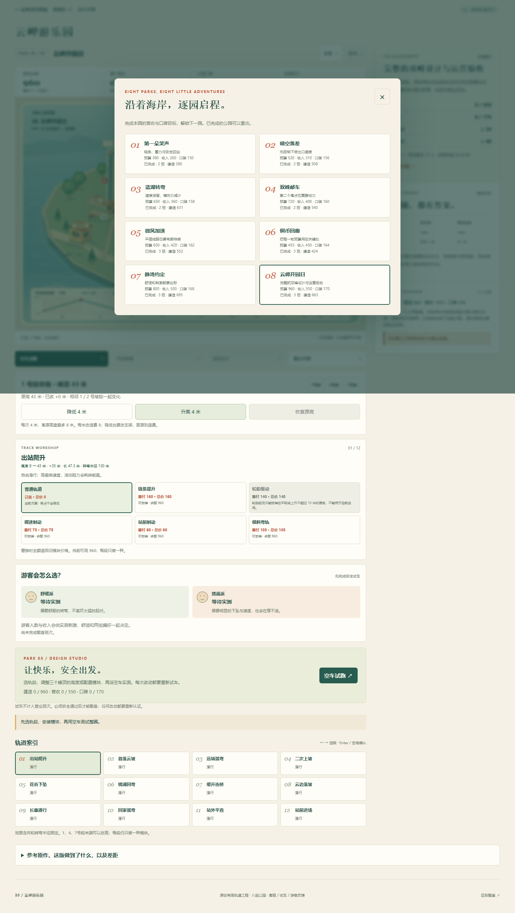
final-revisit-design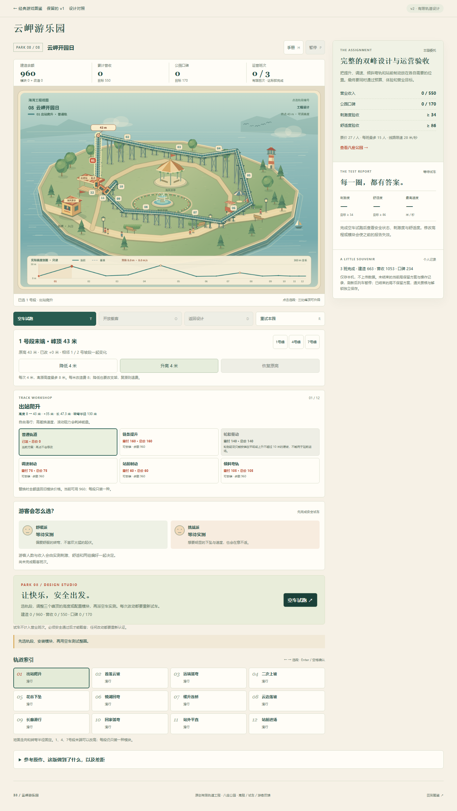
park-1-design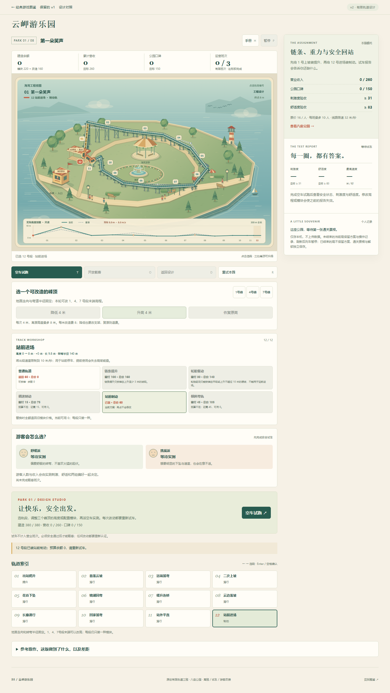
park-1-test-passedpark-1-won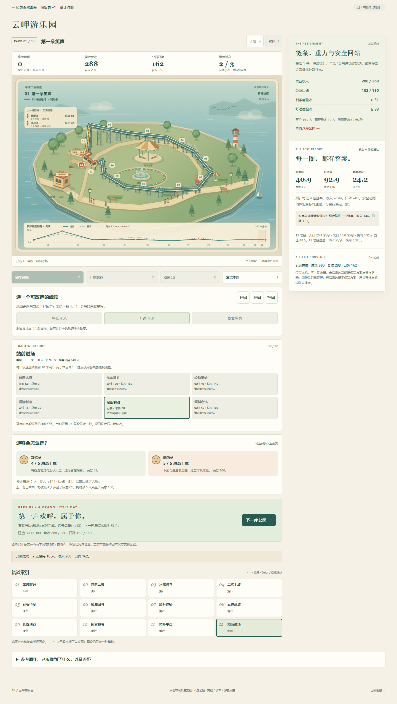
park-2-design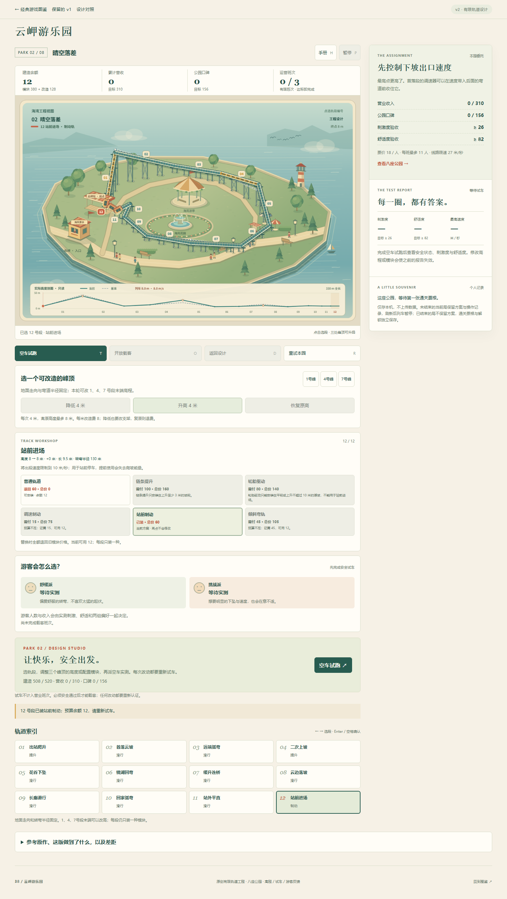
park-2-test-passed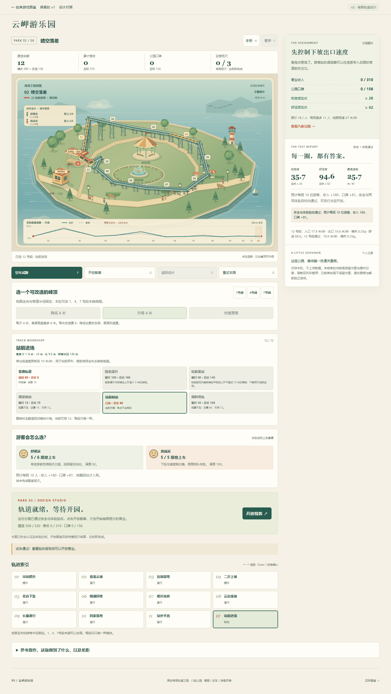
park-2-wonpark-3-designpark-3-test-passedpark-3-wonpark-4-designpark-4-test-passedpark-4-won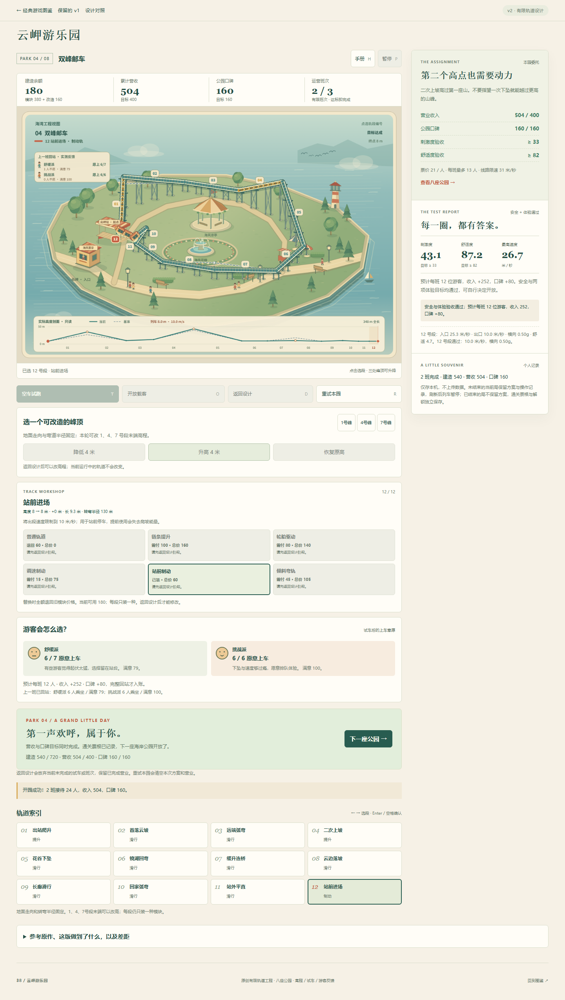
park-5-designpark-5-test-passedpark-5-won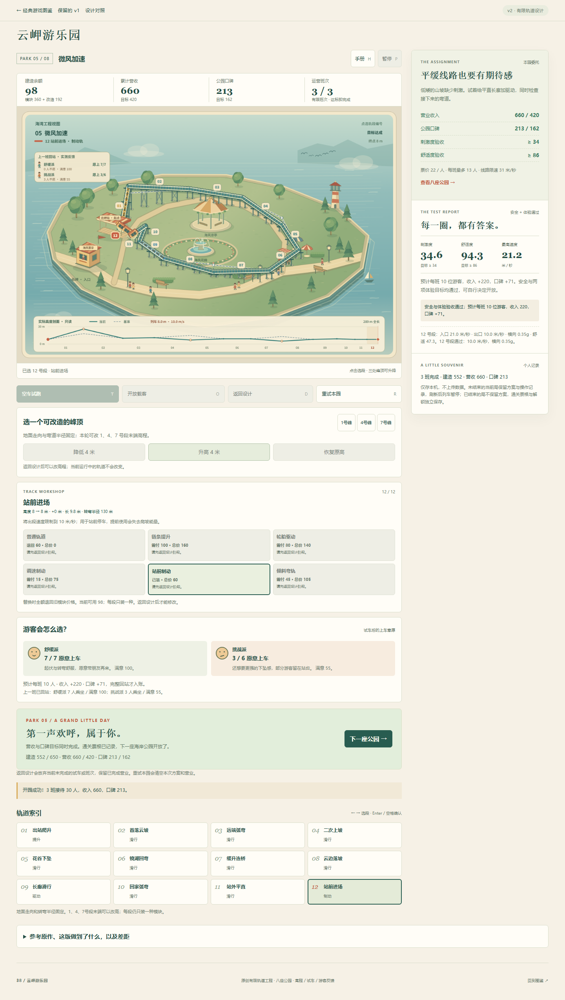
park-6-design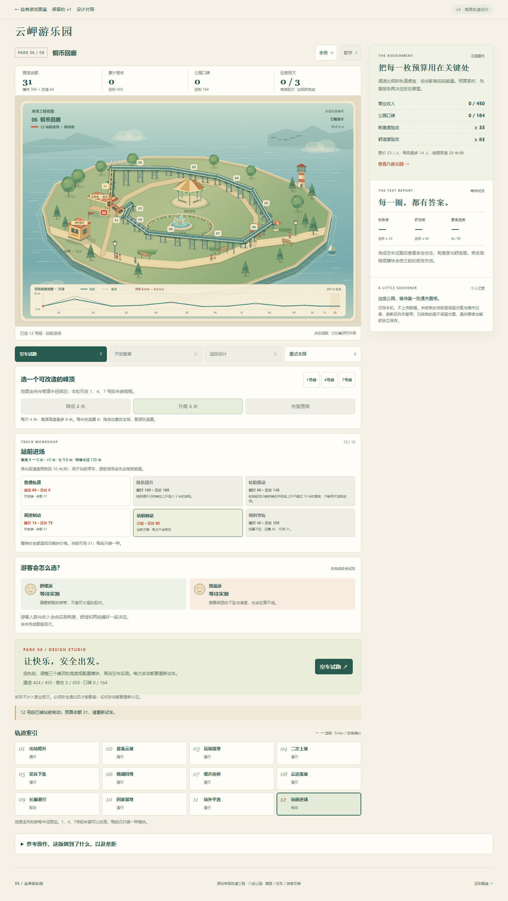
park-6-test-passedpark-6-wonpark-7-design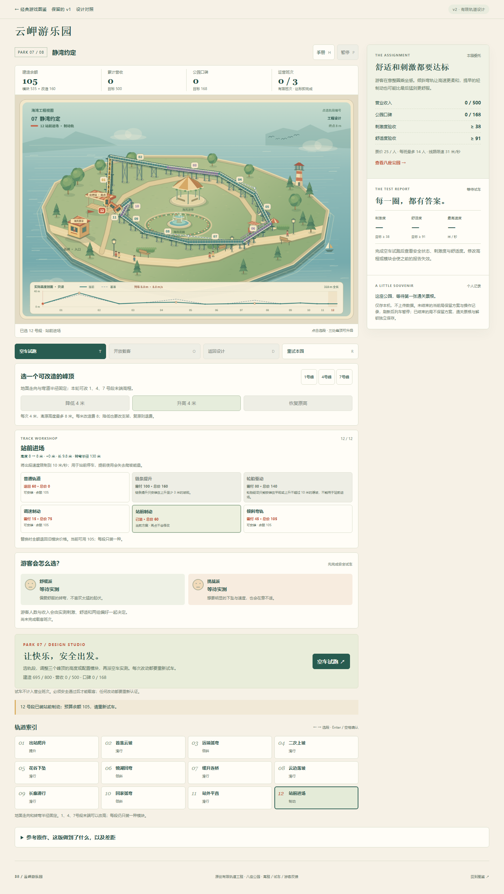
park-7-test-passedpark-7-won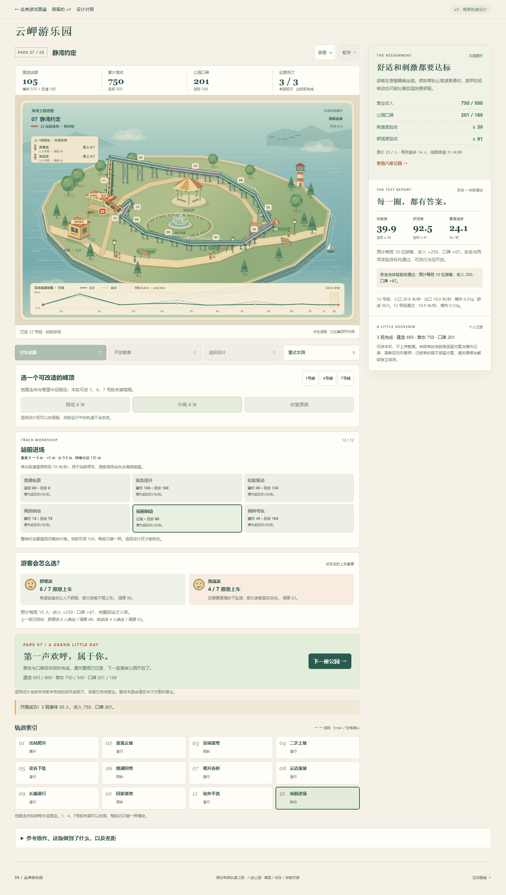
park-8-designpark-8-test-passedpark-8-won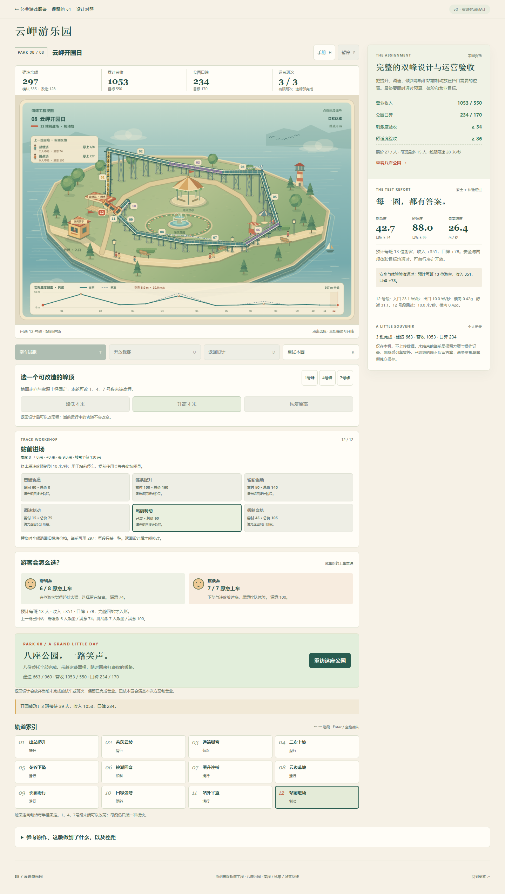